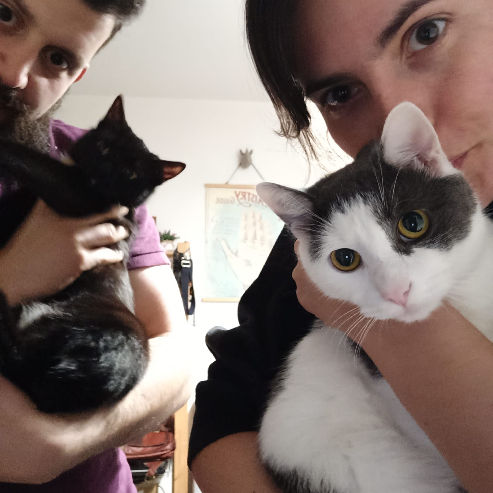

|  | Nikola JantosováFront-end Developer Mother of 2 kittens, Izidor and Caffe, and loving partner to Bruno. |
Work Experience
| Dates | Work |
|---|---|
| 2018-2022 | State Agency for Medical Cannabis |
| 2014-2015 | State Institute for Drug Control |
| HTML | ★ ★ ★ |
| Sewing | ★ ★ ★ ★ |
| Baking | ★ ★ ★ |
| Cooking | ★ ★ ★ ★ ★ |